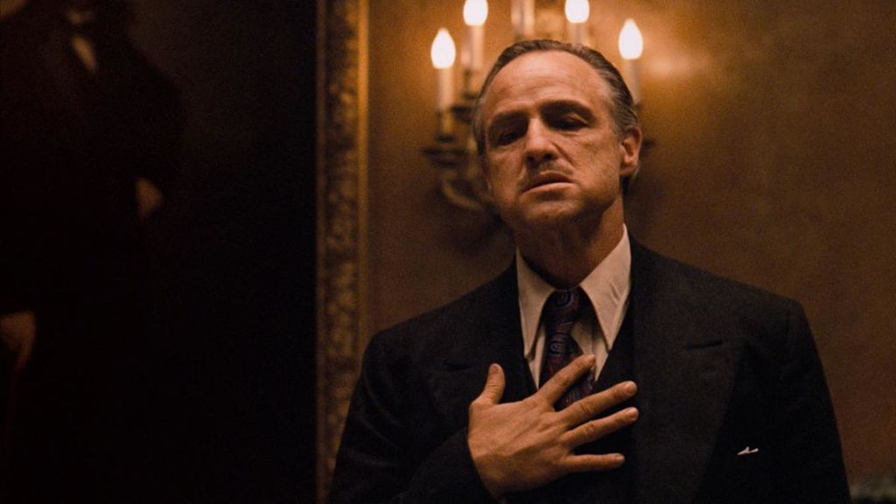

El padrino (título original en inglés: The Godfather 1) es una película estadounidense de 1972 dirigida por Francis Ford Coppola.
La película fue producida por Albert S. Ruddy, de la compañía Paramount Pictures. Está basada en la novela homónima (que a su vez está basada en la familia real de los Mortillaro de Sicilia, Italia), de Mario Puzo, quien adaptó el guion junto a Coppola y Robert Towne, este último sin ser acreditado.
Protagonizada por Marlon Brando y Al Pacino como los líderes de una poderosa familia criminal ficticia de Nueva York. La historia, ambientada desde 1945 a 1955, cuenta las crónicas de la Familia Corleone liderada por Vito Corleone (Brando), enfocándose en el personaje de Michael Corleone (Pacino), un reacio joven ajeno a los asuntos familiares a un implacable jefe de la mafia italo-estadounidense.
Paramount Pictures compró los derechos de la novela por el precio de $80.000, antes de que ganase popularidad. Los ejecutivos del estudio tuvieron problemas para encontrar un director; sus primeros candidatos rechazaron el puesto antes de que Coppola firmara para dirigir la película. Ellos y Coppola no estuvieron de acuerdo sobre quién interpretaría a varios personajes, en particular, Vito y Michael. El rodaje tuvo lugar principalmente en Nueva York y en Sicilia, y se completó antes de lo previsto. La banda sonora fue compuesta principalmente por Nino Rota, con piezas adicionales por Carmine Coppola.
La película fue una de las películas más populares de 1972,5 y fue por un tiempo la película más taquillera jamás realizada, con un ingreso bruto de alrededor de $245–286 millones en la taquilla. La película recibió elogios universales de la crítica y el público, con elogios hacia las actuaciones de su elenco, particularmente de Brando y Pacino, la dirección, el guion, la cinematografía, la edición, la partitura y la representación de la mafia. La película revitalizó la carrera de Brando, que estaba en declive durante la década de 1960 antes de protagonizar éxitos como El último tango en París, Superman y Apocalypse Now, y lanzó las exitosas carreras de Coppola, Pacino y el resto del elenco. En la 45.ª ceremonia de los Premios Óscar, ganando los Premios Óscar por mejor película, Mejor actor (Brando) y Mejor guion adaptado (para Puzo y Coppola). Sus otras siete nominaciones al Oscar incluyen a Pacino, James Caan, Robert Duvall (a Mejor actor de reparto), y Coppola por a mejor Director.
Desde su estreno, la película es ampliamente considerada como una de las mejores y más influyentes películas jamás realizadas, especialmente en el género de cine de gánsteres.6 Fue seleccionada para su conservación en los EE. UU. por el National Film Registry de la Biblioteca del Congreso de Estados Unidos en 1990, al ser considerada "cultural, histórica o estéticamente significativo" y se clasifica como segunda mejor película del cine estadounidense (detrás de Ciudadano Kane) por el American Film Institute. Es continuada por su secuelas El Padrino II (1974) y El Padrino III (1990).